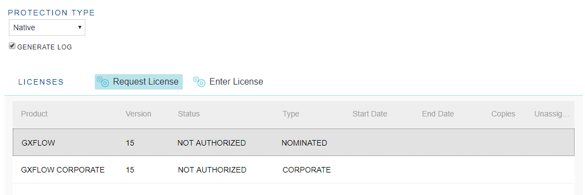
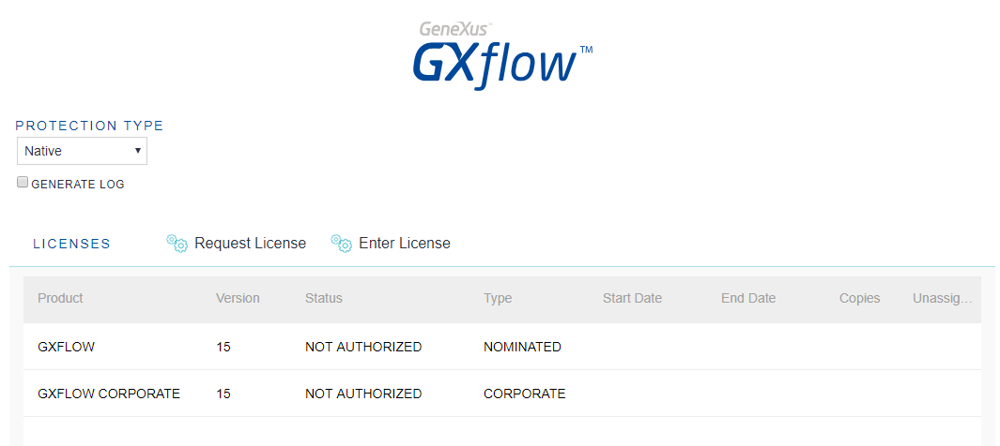
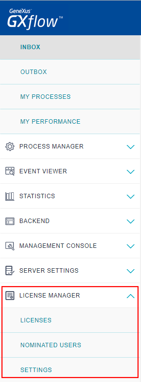

The GXflow licensing scheme is very versatile, it adapts to the requirements of different companies and the production lifecycle of your inbox driven applications. This document contains two sections. The first details the license types you may use and where to store them depending on your needs. The second is specific for users that are updating systems to GeneXus 15 Upgrade 8 or higher. Note that you don't require GXflow licenses for running a Business Process Diagram object in Prototyper Mode while you don't need to log in with different Users and Roles. So if you're just doing your first steps with GXflow you may skip this document. GXflow license types and license protection methodsLicense types (Products)The licenses can be of two different products or types, depending on your plan. GXflowThis product or plan handles nominated licenses used by GXflow. A nominated license is a license that is associated with a specific user, and only that user can use the license. GXflow CorporateThis product or plan handles corporate licenses, which are not nominated. A corporate license allows using GXflow in your applications without user restrictions. Any user that enters the application will be authorized when this type of license is used. Example of how these products or types are shown in the license manager:  Please contact your distributor or Sales representative for more details regarding the plans or how your plan relates to these products or types. License Protection methods (Native or Protection Server)Licenses can be handled with two different methods or mechanisms, each storing licenses in different locations, depending on your needs. Two options are available: Native (default) and Protection Server. NativeThe licenses are stored in the database, specifically one of the GXflow engine. Protection ServerThe licenses are stored using specific functions of the operating system, via GeneXus Protection (9.7.2.14 or higher). RecommendationsThe Native protection method is recommended when the application is installed on a Platform as a Service environment (PaaS) or on an environment that needs horizontal scalability; more than that, in most of those cases it is the only one that is suitable for those scenarios. Because of infrastructure and networking issues, this is also the one that is easier to install and set up, especially in non-Windows servers (Linux, AIX, iSeries, etc). The Protection Server protection method is recommended for development and testing stages, where licenses are shared for different prototypes and databases are temporary. This method requires to register some COM Dlls which is not possible to do in PaaS servers. So, generally speaking, the Native is the one that is recommended for production environments and the Protection Server for prototyping. Note for developers: License protection method is, once selected, stored in the database; so take into account that you have to set it again after operations that delete the selection (eg.: 'Create workflow tables') Requesting, installing, updating Licenses and license information; nominating UsersAll operations around native licenses are handled using the GXflow License Manager. To use Protection Server licenses, you must change the license protection setting in the GXflow License Manager. Read GXflow centralized licenses configuration (GXflow on Windows) for more information. Then, almost all operations around Protection Server licenses can be handled using the GXflow License Manager too. Updating from GeneXus 15 Upgrade 7 or lower (to GeneXus 15 Upgrade 8 or higher)GeneXus 15 Upgrade 8 features scalability, stability and usability improvements related to GXflow, specifically to GXflow license management. Licenses can now be stored in the database to improve scalability and ability to run in Platform as a Service (PaaS) environments and a new license manager has been introduced to easily handle the licenses no matter on what environment, operating system or DBMS you are running. The following steps will help you to update your licenses.
New License ManagerTo handle this new license scheme, a new web-based license manager is used, where you can execute all the actions needed to manage GXflow licenses (Request, Install, Uninstall, Change, etc.)  This new license manager is installed as part of the GXflow Client.  Check this document for detailed information on how to work in this new license manager. CompatibilityIn Linux, storing licenses in the local file system is discontinued. Refer to the section "License Protection methods (Native or Protection Server)" for the new options available. FAQUsing GXflow's Login panel, I cannot login with WFADMINISTRATOR user to the GXflow standard client, why?As of GeneXus 15 Upgrade 8, if you do not have GXflow licenses, you cannot log in to GXflow Standard Client using WFADMINISTRATOR user (neither with any other user) using GXflow's login panel. Logging in to the GXflow Standard Client with WFADMINISTRATOR (or any other user) in prototyping scenarios can be useful when you want to log in using different roles. Note: You don't require GXflow licenses for running a Business Process Diagram object in Prototyper Mode (while you don't need to log in with different Users and Roles). When you run a Business Process Diagram object with Execution mode property set to "Standard Client", that action opens the GXflow Standard client, so in that case you need to install at least one license to be able to log in. Note: You can still log in using WFADMINISTRATOR via GAM's Login or via a Custom Login Panel that uses GXflow's API. Who can handle Licenses?No login is required when no license is installed. As soon as at least one license is installed, a user with GXflow Administrator role (eg. WFADMINISTRATOR) can request and handle the licenses.
|